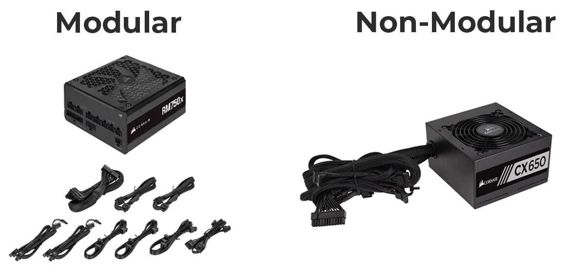

PSU for Beginners: Don't Cheap Out on Your Power Supply
Written by: The PC Parts Guide Team
March 2026 • 6 min read
The PSU (Power Supply Unit) is the most boring-sounding part of a PC — but it's also one of the most important. A cheap, low-quality PSU can destroy every single other component in your build. This is the one part where you absolutely should not cut corners.
What Does a PSU Do?
Your PSU converts the AC power from the wall outlet into clean, stable DC power that your components can use. Think of it like a water filter — it takes raw, dirty power from the grid and delivers clean, consistent power to your PC's organs.
Every single component in your PC — CPU, GPU, motherboard, RAM, fans, storage — gets its power from the PSU. A unstable PSU means unstable power to everything. That can cause crashes, data corruption, and in worst cases, fried components.
REAL DANGER: Cheap, unbranded PSUs from no-name brands can literally catch fire or send a voltage spike through your system. They are found in some budget PCs and online bundles. Always buy a PSU from a reputable brand!

A modular PSU — only the cables you need, keeping your build clean.
How Many Watts Do You Need?
The most important spec is wattage — how much total power the PSU can supply. You need enough watts to power all your components at the same time, with some headroom to spare.
Build Type
Example Parts
Recommended PSU
Budget Gaming
i5-12400F + RTX 3060
550W–650W
Mid-Range Gaming
Ryzen 5 5600 + RTX 4070
650W–750W
High-End Gaming
Ryzen 7 5800X + RTX 4080
750W–850W
Enthusiast / Overclocked
Ryzen 9 + RTX 4090
1000W+
RULE OF THUMB: Add up your CPU TDP + GPU TDP, then add 100–150W of headroom. For example: 65W CPU + 200W GPU = 265W actual use → 450W minimum → buy a 550W or 650W PSU for safety.
80 PLUS Ratings: Efficiency Explained
You'll see ratings like "80+ Bronze" or "80+ Gold" on PSUs. These are efficiency ratings — they tell you how much of the power drawn from the wall actually reaches your components (vs. being wasted as heat).
Rating
Efficiency at 50% Load
Price Range
Verdict
80+ White
80%
Cheapest
Avoid if possible
80+ Bronze
85%
₱2,500–₱4,000
Acceptable for budget builds
80+ Silver
88%
₱3,500–₱5,000
Good value
80+ Gold
90%
₱5,000–₱9,000
Recommended sweet spot
80+ Platinum
92%
₱8,000–₱14,000
Excellent, premium builds
80+ Titanium
94%
₱12,000+
Overkill for most
Higher efficiency means lower electricity bills, less heat, and longer component lifespan. Gold is the sweet spot for most builds.
Modular vs Non-Modular
PSUs come in three cable styles:
Non-Modular: All cables are permanently attached. Cheaper, but you'll have a bunch of unused cables stuffed inside your case — messy and bad for airflow. Best for: Tight budgets.
Semi-Modular: Essential cables (motherboard, CPU) are attached; extras are detachable. Good middle ground. Best for: Most builds.
Fully Modular: Every cable is detachable — only plug in what you need. Cleanest build, easiest cable management. Best for: Mid to high-end builds where looks matter.
Trusted PSU Brands
Only buy PSUs from these reputable manufacturers. Their quality control is consistent and they have proper safety protections built in:
Seasonic — One of the best. Many brands use their platforms.
Corsair — Reliable, widely available in the PH, great warranty support.
be quiet! — Quiet operation, excellent quality.
EVGA — Great value, strong performance. (Note: EVGA exited the GPU market but still makes great PSUs.)
Cooler Master — Solid mid-range options.
Avoid no-name brands from Lazada/Shopee with suspiciously low prices.
BUYING TIP: A ₱1,500 PSU from a no-name brand can destroy a ₱20,000 GPU. Spend ₱3,500–₱5,000 on a quality Bronze or Gold unit and sleep easy. It's the cheapest insurance you can buy for your build.
QUICK SUMMARY:
• PSU = Power filter that feeds clean power to every component
• A bad PSU can destroy your ENTIRE build — don't cheap out
• Calculate wattage: CPU TDP + GPU TDP + 150W headroom
• 80+ Gold is the sweet spot for efficiency
• Modular PSU = Cleaner cable management
• Stick to trusted brands: Seasonic, Corsair, be quiet!, EVGA